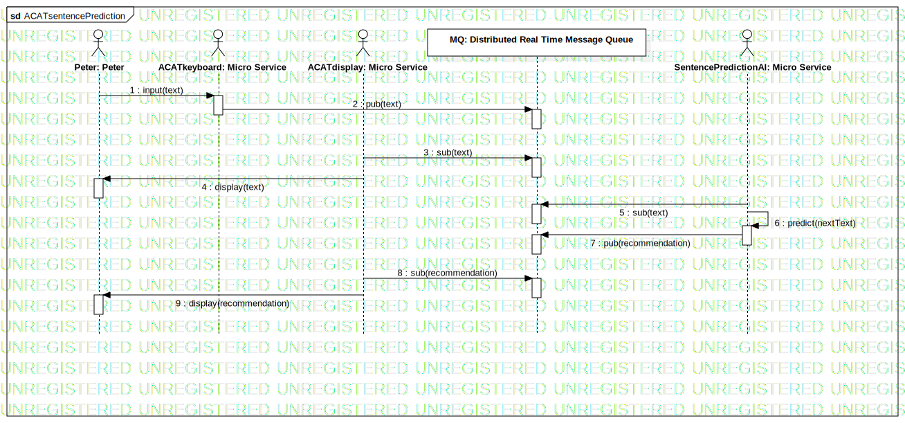

ACATsentencePrediction
UMLInteraction
Untitled
::
Process View
::
ACATsentencePrediction
::
ACATsentencePrediction
Description
none
Diagrams

ACATsentencePrediction
Participants
Peter: Peter
ACATkeyboard: Micro Service
SentencePredictionAI: Micro Service
MQ: Distributed Real Time Message Queue
ACATdisplay: Micro Service
Messages
input (Peter→ACATkeyboard)
pub (ACATkeyboard→MQ)
sub (ACATdisplay→MQ)
display (ACATdisplay→Peter)
sub (SentencePredictionAI→MQ)
predict (SentencePredictionAI→SentencePredictionAI)
pub (SentencePredictionAI→MQ)
sub (ACATdisplay→MQ)
display (ACATdisplay→Peter)
Properties
Name
Value
name
ACATsentencePrediction
stereotype
null
visibility
public
isReentrant
true
Owned Elements
ACATsentencePrediction